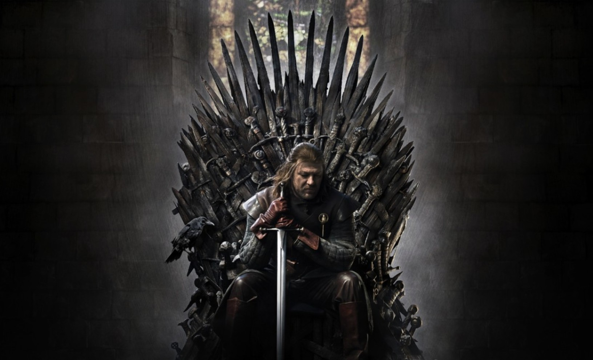
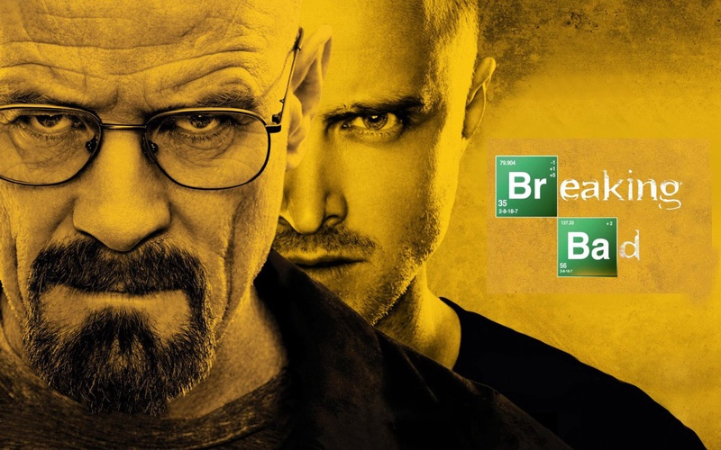
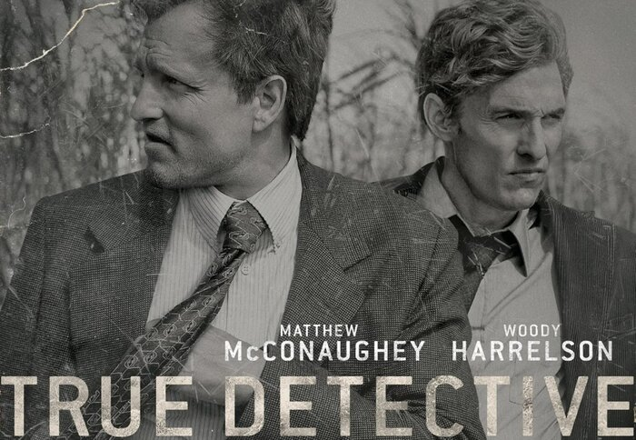

| Название | Рейтинг |
|---|---|
| Игра престолов | 9.05 |
| Во все тяжкие | 9.16 |
| Чернобыль | 9.16 |
| Настоящий детектив | 8.76 |
| Твин Пикс | 8.5 |
- 1. Игра престолов
- 
- Вестерос, континент семи королевств, переживает эпоху придворных заговоров и полномасштабных войн. Король-узурпатор стремится удержать власть в столице, пока династия Ланнистеров с помощью коварных интриг пытается взять бразды правления в свои руки. Жертвой жестоких политических игр становится династия Старков, правящая на севере Вестероса. Пока разгорается кровавый конфликт, за тысячи миль Дейнерис Таргариен, наследница великого правящего рода, уничтоженного в результате дворцового переворота, планирует вернуть себе престол. Эти распри заслоняют настоящую проблему, угрожающую всему живому, — нашествие с севера несокрушимой армии мертвецов под предводительством Короля Ночи.
- 2. Во все тяжкие
- 
- Уолтер Уайт — 50-летний учитель химии в средней школе. В своем деле он настоящий гений, однако обстоятельства жизни не позволили ему реализовать потенциал в полной мере. Когда у Уолтера диагностируют рак, к нему приходит горькое осознание, что он не смог обеспечить свою семью. Как-то раз свояк Уолта, работающий в УБН, берет его с собой на рейд по метамфетаминовым лабораториям. Герой видит, сколько зарабатывают наркоторговцы, и решает начать собственное производство мета. В напарники он берет своего бывшего ученика, раздолбая и наркомана Джесси Пинкмана.
- 3. Чернобыль

- Авария на Чернобыльской АЭС стала одним из мрачнейших событий позднесоветской эпохи. Мини-сериал Крейга Мейзина и Йохана Ренка скрупулезно воссоздает произошедшее в 1986-м, особое внимание уделяя героям, жертвам и виновникам катастрофы. Создатели опирались на архивные документы и свидетельства очевидцев, а также на книгу Светланы Алексиевич «Чернобыльская молитва». В центре сюжета Валерий Легасов, специалист по атомной энергетике и член правительственной комиссии по ликвидации последствий аварии, а также Борис Щербина, партийный деятель и глава этой комиссии. Кроме того, важная роль в сериале отводится Ульяне Хомюк: это собирательный образ ученого-ликвидатора.
- 4. Настоящий детектив
- 
- «Настоящий детектив» — полюбившийся миллионам сериал-антология. На данный момент вышли три сезона, которые посвящены трем совершенно разным таинственным криминальным историям. Вместе с преступлениями и героями меняется также место действия: из болот Луизианы — в калифорнийскую пустыню, а оттуда — в леса Миссисипи. Жестокое убийство, загадочные обстоятельства, оккультные намеки, параллельные временные линии, травмированные детективы и обязательно головокружительная кровавая перестрелка в середине каждого сезона — вот крайне удачный рецепт современной процедурной драмы, периодически перетекающей в брутальный боевик.
- 5. Твин Пикс

- Затерянный в сосновых лесах городок Твин Пикс кажется райским местом, пока одним пасмурным утром на побережье не находят труп девушки. Убитая — старшеклассница Лора Палмер, подозреваемых нет, жители в шоке. В город прибывает агент ФБР Дейл Купер, человек с экстраординарным умом и, кажется, самым добрым сердцем в мире. Ему предстоит столкнуться с мрачными тайнами Твин Пикса, в сердце которого уже давно поселилась злая сущность, отравляющая жизнь людей. Само расследование — это путь от одной загадки к другой, и куда он приведет в итоге, представить невозможно.